Límites de pista
Distingue una salida inocente de un atajo con ventaja. Si sueltas el acelerador y pierdes tiempo, no cuenta.
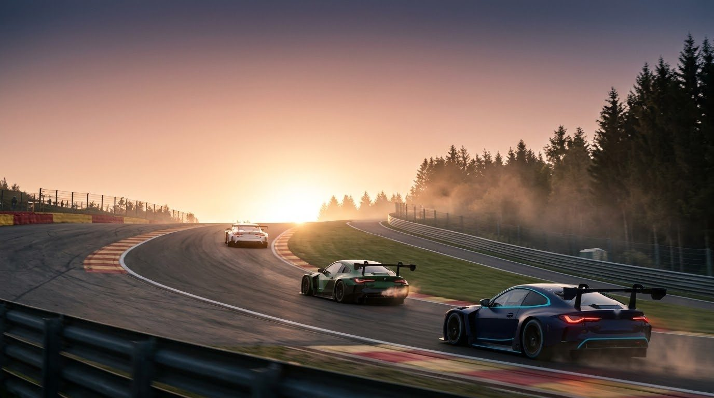
Steward vigila los límites de pista, los contactos, las banderas y las largadas. Avisa a tiempo, aplica la sanción que corresponde y deja que la carrera siga, offline contra la IA y online con tus amigos.
Gratis y de código abierto. Necesitas Content Manager y Custom Shaders Patch 0.2 o más nuevo.
En una carrera contra la IA nadie revisa si cortaste la chicana. En un servidor entre amigos, discutir quién chocó a quién termina con la carrera. Steward toma esas decisiones con reglas claras, las mismas para todos, y explica cada una en pantalla.
Distingue una salida inocente de un atajo con ventaja. Si sueltas el acelerador y pierdes tiempo, no cuenta.
Roce, contacto o choque fuerte según la diferencia de velocidad. Quien alcanza por detrás es responsable; lado a lado es incidente de carrera.
Verde, amarilla, azul, blanca, a cuadros y negra en pista, más amarilla total y roja decretadas por la dirección de carrera.
Salida parada o lanzada, en una o dos filas, con velocímetro contra el límite, radar de distancia y semáforo verde.
Tiempo, levantar el pie, drive-through, stop and go y descalificación, con plazo en vueltas y devolución de la posición.
Cada piloto vigila su auto y las apps se avisan entre sí. Un script gratuito para el servidor ordena la largada.
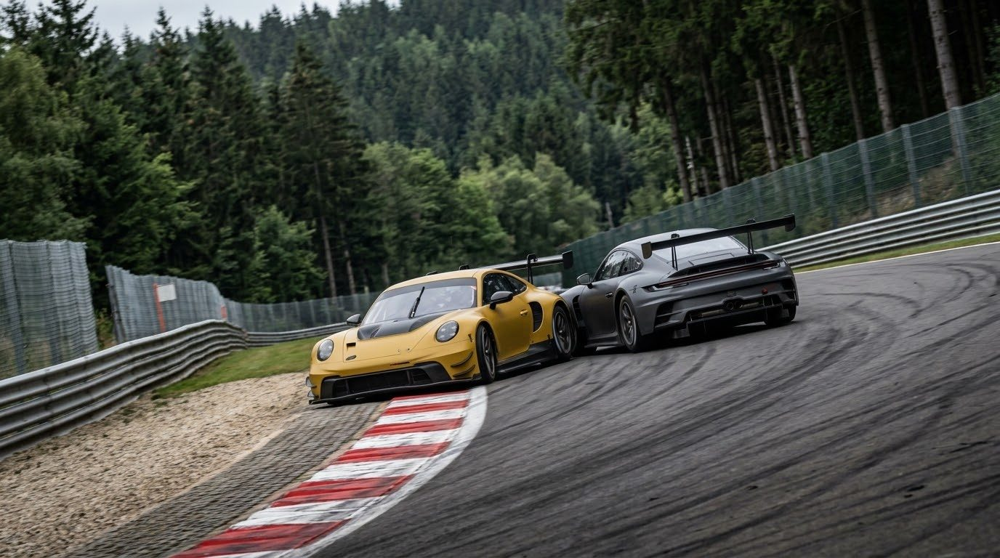
Una barra con tu sesión y tus avisos, y tarjetas que aparecen solo cuando pasa algo: qué ocurrió, qué tienes que hacer y cuánto plazo te queda. Elige el estilo claro, el oscuro o ninguno.
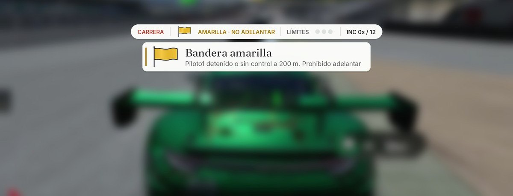
Vista previa generada con el código de la app sobre una imagen del juego. Dentro del juego, el tamaño se ajusta a tu pantalla.
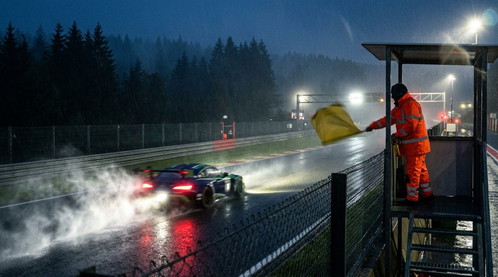
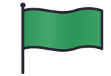
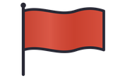
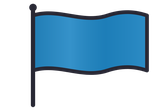
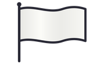
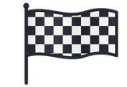
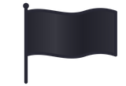
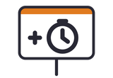
Offline, Steward vigila también a la IA: la hace levantar el pie o entrar a pits cuando la pista lo permite, y apaga las sanciones propias del juego para que no se sumen. Online basta con que cada piloto tenga la app.
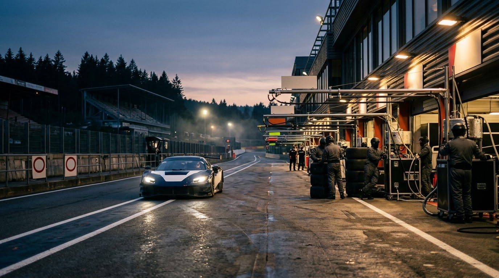
No hay un servidor central ni nada que pagar. Cada app vigila solo a su piloto, comparte lo que pasa con las demás y respeta el reglamento del administrador. El script del servidor, que es opcional, arma la fila de largada y da la bandera verde.
Baja el archivo Steward-2.0.0.zip desde la página de versiones en GitHub.
Suéltalo en la ventana de Content Manager y confirma. Si tenías Comisario, el zip lo reemplaza y tus ajustes pasan solos a Steward.
Lleva el mouse al borde derecho de la pantalla, abre la barra de apps y activa Steward. Los indicadores aparecen solos.
El engranaje de la ventana abre los ajustes: idioma, sanciones, largada, banderas y estilo de la pantalla.
¿Venías de Comisario? El zip deja en su carpeta un aviso vacío que no hace nada. Puedes borrar apps/lua/Comisario cuando quieras.
En Content Manager, abre el preset del servidor, ve a las opciones extra de Custom Shaders Patch y pega este bloque. El script es público y gratuito.
rollingStartSalida lanzada. Con 0, salida parada.formationSpeedVelocidad máxima antes de la verde, en km/h.greenMetersLa verde sale cuando el líder está a estos metros de la meta.startMetersSalida corta: el líder parte a estos metros de la meta. Con 0, vuelta de formación completa.adminPassClave del administrador. Quien la escriba en su app fija el reglamento y las banderas.requireAppQuien no tenga la app no puede pasar de 60 km/h.[SCRIPT_...] SCRIPT = 'https://gist.githubusercontent.com/matipriv768-blip/3d8548a91410b553ecd85a07440cbccf/raw/comisario_servidor.lua' rollingStart = 1 formationSpeed = 100 greenMeters = 100 startMeters = 500 adminPass = 'tu-clave' requireApp = 1
Sí. Offline vigila a cada auto de la IA igual que a ti. Si la pista lo permite, la IA cumple sus sanciones en pista; si no, se suman a su tiempo final.
No. La app y el script del servidor son gratis. Solo hace falta que cada piloto tenga la app instalada.
Hacen el mismo trabajo, así que conviene usar uno a la vez. En un servidor con Real Penalty, apaga Steward para no recibir sanciones dobles.
Es la misma app con nombre nuevo. La versión 2.0 estrena la interfaz y los íconos; las reglas, las sanciones y las largadas funcionan igual que en la 1.6.
Sí. Todo está en GitHub con licencia MIT, y las pruebas corren fuera del juego con un simulador de la API de Custom Shaders Patch.
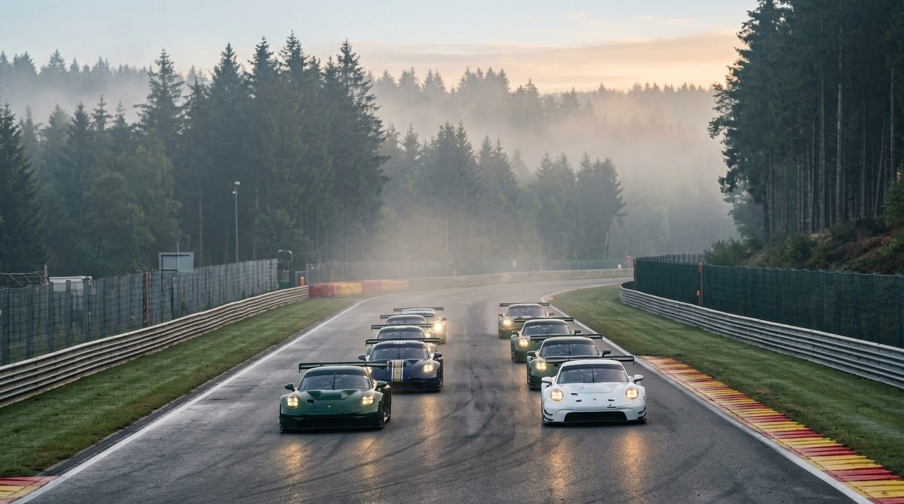